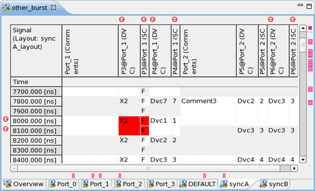

Working with sync groups
Certain devices, for example transmitters and receivers, need to be aligned (synchronized) so data can be captured as expected. A synchronization group (sync group) forces ports to always start at the same point in time.
About this task
You can create new sync groups in the New Multiport Burst dialog, in the New port burst dialog or in the Sync Group cell of the Pattern Explorer. When creating a new port burst, you must assign each selected port to a specific sync group. By default, this is the DEFAULT sync group.
Ports to be assigned to a sync group must not share device pins with any other port in that sync group.
Procedures
To configure the layout of a sync group page:
- Open and expand a sync group page, right-click, and select Configure Layout.
- In the Configure Layout dialog, at the bottom, make sure all required columns are displayed. Note the Port column, which is active only for the sync group pages of the multiport editor.
- Configure the layout as required. For a general description of the dialog tasks see Configuring the layout of the editor.
To change the sync group of a port burst:
- Open the Pattern Explorer and locate the port burst. You may need to expand the hierarchy of the multiport burst it belongs to.
- In the table row of the port burst, go to the Sync Group cell.
- Specify the new sync group. Either type a new name to create a sync group, or use content assist (Ctrl + spacebar) to list the already defined sync groups.
To toggle the display of tabs or pages on the multiport burst editor:
'Hide/Show all SyncGroups tabs' (on the main toolbar) toggles the display of sync group pages. |
|
'Hide/Show all PortBurst tabs' (on the main toolbar) toggles the display port burst pages. |
To display fail information and ports synchronized in timeline:
Before you begin you must have defined a start label or run the test flow.
- Open a sync group page for example, the DEFAULT page) of a multiport burst (type = MPBurst) in the multiport burst editor.
- On the main toolbar click to switch to expanded mode. The warning markers, the fail information per pattern, and
the timeline synchronization can only be seen in expanded mode.
The sync group page of the multiport burst editor shows the signals of the multiple ports synchronized in timeline (must be set as Appearance option on the Pattern Tool preference page), and any fail information. The signal name in the header is always <SignalName>@<Port>.

Note The signals of different ports are displayed synchronously within a sync group, but not across sync groups. If the timing ratio between ports is not reasonable, the sync group can still be expanded, but the timeline is not aligned. Warning markers at the top of each signal show an error message.
To display comment columns on sync group pages:
The comment columns on the sync group pages show the comments of the main patterns called in the port bursts.
To display the comment columns you must configure the layout accordingly. For details see Configuring the layout of the editor.
Functional changes
- Introduced in SmarTest 7.1.3